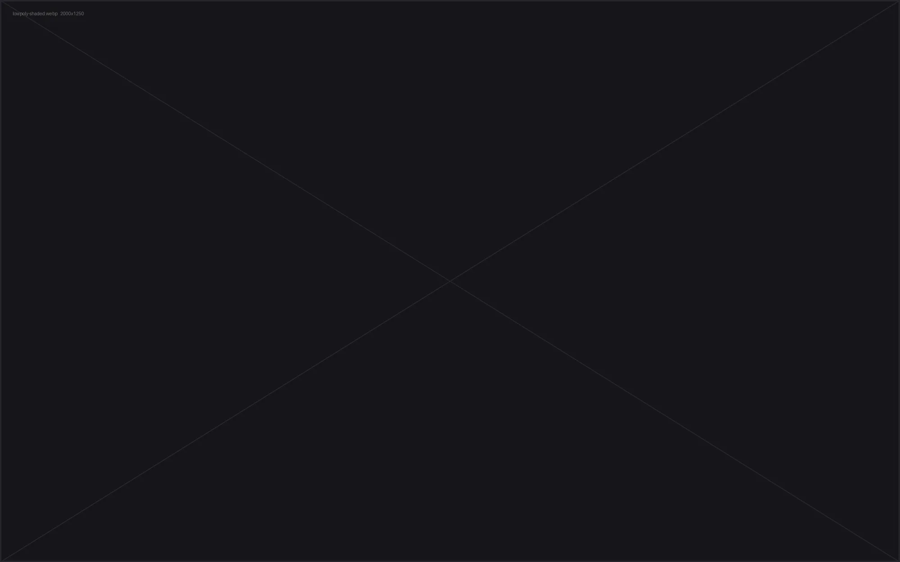

Modeling test — final round
A chair,
told from the inside out.
PLINTH is a low, soft-shouldered lounge chair on a solid timber plinth. This page follows the whole build — reference to render — in the order it happened.
- Role
- Modeling · Lookdev · Render
- Software
- Blender · ZBrush · Substance
- Duration
- 5 days
- Deliverable
- Production-ready asset
The brief
One chair, four hard problems.
The test asked for a single upholstered chair, believable at close range and light enough to sit in a full interior scene. That splits into four problems: a clean quad base that subdivides without pinching, soft-goods that read as fabric and not as geometry, a timber base with honest joinery, and a lookdev that survives both studio white and a warm interior.
I worked in that order and kept every stage reviewable — the wireframe, the sculpt, the shading breakdown and the render passes are all below, exactly as they came out of the pipeline.
- 01Silhouette firstBlocking approved before a single detail.
- 02All-quad topologyEdge flow follows the seams, not the software.
- 03Soft-goods logicCompression, gravity and piping done as sculpt, not noise.
- 04Scene-readyOne asset, five material moods, no re-topology.
01
Research & reference
Two days of looking before one hour of modeling. I built a board around a narrow question: what makes a low chair feel heavy at the base and light at the shoulders?
What I kept
The continuous shoulder line, the single piping run from arm to back, and a plinth that reads as one solid block with a shadow gap under it.
What I dropped
Buttoning and heavy tufting — they fight the clean shoulder and cost geometry that the brief didn't ask for.
Dimensions locked
W 104 · D 92 · H 68 cm · seat height 38 cm. Every later stage was modeled to real-world scale in metres.
02
Low-poly base mesh
Built as one clean quad cage per part — shell, cushions, plinth, feet — so the asset stays editable and subdivides predictably. Drag the handle to reveal the wire.

Shaded
Wireframe
- Base mesh
- 18.4k quads
- Quad ratio
- 100%
- Subdiv level
- 2 render
- UV sets
- 3 udim-free
03
Sculpt & soft-goods
The base mesh is correct but dead. Everything that makes it upholstery happens here: seam tension, the cushion sagging where a body sits, folds that start at a seam and die into the volume.
Rule I followed
Every fold answers to something physical — a seam, a corner, or weight. Nothing decorative.
Bake
Normal + AO baked from the high-poly onto the level-0 cage. Nothing baked that could be shaded.
Cost
4.1M tris in sculpt, 18.4k quads shipped. The detail lives in maps, not in the mesh.
04
Studio setup
Neutral cyc, one large soft key at 40°, a low fill and a rim to separate the back from the wall. Built to show form, not to flatter it.
Light rig
- Key 3×2 m softbox, 40° camera-left, 5600 K
- Fill bounce card at 1/8 key, camera-right
- Rim narrow strip, 140° behind, 1/4 key
- Render Cycles · 2048 spp · OIDN · 4000 × 4000 px
05
Interior scene
The real test: does the asset hold up in context, at scale, under practical light? One room, one time of day, five cameras.
06
Material moods
Same geometry, same UVs, five stories. Every variant is a material swap only — which is the point of building the asset this way.
07
Inspect the asset
The shipped mesh, in your browser. Drag to orbit, scroll to zoom, toggle the wireframe to check the topology yourself.

Drag to rotate · 36 frames
Loading…
Real-world scale · metres · Y-up. GLB is Draco-compressed and shipped with baked normal and AO maps at 2 K.
Technical
Specs & delivery
| Base mesh | 18,412 quads · 100% quad · no n-gons |
|---|---|
| Render mesh | Subdiv 2 · 294k quads |
| Sculpt | 4.1M tris (ZBrush) |
| UVs | 3 sets · non-overlapping · 10.24 px/cm texel density |
| Textures | 4K PBR — base, roughness, normal, AO, (fabric) sheen |
| Materials | 5 mood variants, geometry untouched |
| Render | Cycles · OIDN · ACES · 4000 px stills |
| Formats | .blend · .fbx · .obj · .glb (Draco) |
| Scale | Metres · Y-up · origin at floor centre |
Trade-offs I made
No cloth sim — the folds are sculpted. It gives full art direction over where the eye lands and keeps the asset deterministic across the five moods.
What I'd do next
A second cushion state for "occupied" shots, a fabric-specific sheen LUT, and an LOD1 at ~6k quads for background dressing.